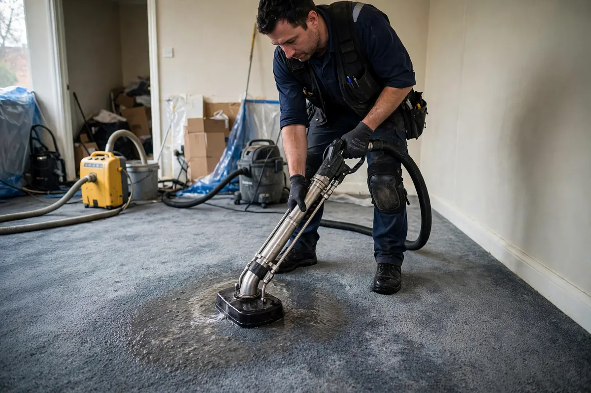

Carpet Water Cleanup in Hollywood, FL
Carpet is a sponge with a finished surface. The face fibers you walk on sit over padding that can hold many times its weight in water, and beneath that, the subfloor or slab. Carpet water cleanup in Hollywood, FL is really three jobs at once: extracting the carpet, deciding the fate of the padding, and verifying the subfloor underneath — because a carpet that feels dry on top can still be wet underneath.

Understanding Carpet Water Cleanup in Hollywood
Clean-water events — a supply line leak, an overflowing tub — give carpet its best chance: thorough extraction can often save the carpet itself. But the padding underneath is a different story. Carpet pad acts as a reservoir, and once saturated it rarely dries cleanly or quickly; in most professional cleanups it's removed and replaced. Contaminated water changes everything: gray or black water in carpet means both carpet and pad come out, regardless of how new they were.
The subfloor is the hidden third layer. Plywood and OSB subfloors swell and delaminate when they stay wet; concrete slabs wick moisture outward to the edges, where it feeds baseboards and wall bottoms. Tack strips — the wood strips with pins that grip the carpet edge — absorb water and rust, and they're cheap to replace. In Hollywood's humidity, carpet left damp for even a couple of days can develop musty odors that don't leave when the surface dries.
How We Handle the Job
We extract with weighted tools that press water out of carpet and pad together — surface wands alone leave too much behind. Then the carpet is pulled back so the pad can be evaluated; in most cases it's cut out and removed. With the pad gone, we take moisture readings on the subfloor or slab directly. If the carpet is salvageable, it's laid back after the subfloor dries, and new pad goes in before the carpet is re-stretched.
Delamination is the dealbreaker — if the carpet's backing has separated from the face fibers, no amount of drying saves it, and we'll show you the test on site. Tack strips are replaced as a matter of course. The subfloor must read dry before new pad goes down, or you're sealing moisture under a fresh installation. Related services such as emergency water extraction, structural drying, and flood cleanup often connect to the same loss depending on conditions on site.
Local Response and Insurance Support
Searching for carpet water cleanup near me usually means you need help without delay. We answer emergency calls around the clock. Documentation — photos and moisture readings — supports conversations with your insurance carrier when the loss is sudden and accidental. We do not decide coverage; we provide clear technical information about the work performed.
When to Call
Call if you have active water, wet materials that are not drying, odors after a leak, or a backup that may involve contaminated water. Early action in Hollywood’s climate is almost always less disruptive than waiting. For neighborhood-specific service, see our service areas. For the full list of capabilities, visit all services.
Frequently Asked Questions
Can my wet carpet be saved?
Often yes, if the water was clean and extraction started promptly. The face fibers are resilient; it's the padding underneath that's usually sacrificed. Contaminated water, long saturation times, or delamination of the backing are the three things that turn 'save' into 'replace.' A technician can test the backing on site.
Why does the padding have to go?
Carpet pad is essentially a sponge designed to cushion, not to dry. Once saturated it holds water against the subfloor, dries far slower than the carpet above it, and traps odors and contaminants. Replacing pad is inexpensive compared to the cost of a subfloor that rotted because moisture was sealed underneath it.
My carpet feels dry — is the job done?
Not necessarily. Carpet face fibers dry fast with airflow while the pad and subfloor beneath stay wet — that's the most common way hidden damage continues after a cleanup. Moisture readings taken through to the subfloor are the only reliable check. If no one metered beneath the carpet, the job wasn't verified.
Will my carpet smell after water damage?
A musty smell means something is still damp — usually the pad, the subfloor, or the tack strips. Proper extraction, pad replacement, and verified subfloor drying prevent it. If odor persists after professional drying, the moisture source wasn't fully addressed and deserves another look.